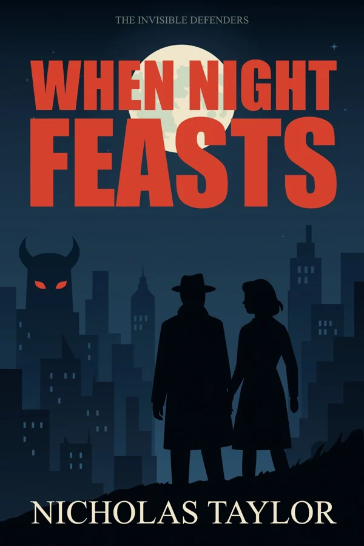

Book one
When Night Feasts
In the throbbing heart of Newland City, Ruby's life transforms after a chilling encounter with a demon. Her savior is a man named Tom, a member of the Sect, a clandestine organization that hunts demons. Now endowed with new-found abilities, Ruby joins Tom in a terrifying game of cat and mouse as they hunt a demon with an appetite for murder. Will Ruby and Tom find the demon and protect their city from supernatural predators? Or will they be the demon's next meal?
Choose your preferred retailer on Books2Read.